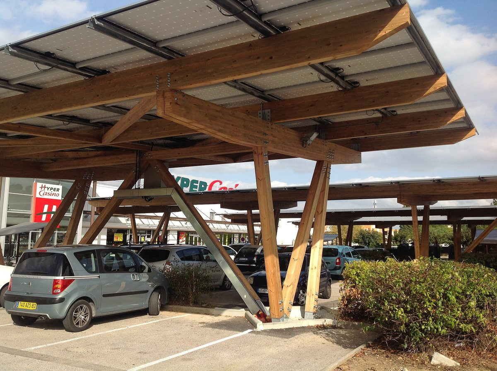

프랑스 '주차장 태양광 지붕 의무' 첫 기한 석 달 지났지만…대형 식품매장 큰 주차장 85%에 보이는 설비 없어

민간 주차장 태양광 지도 업체 파르크선, 매장 1만6,790곳 항공사진·라이다로 첫 전국 실측…설비 비율 2023년 4.5%→2026년 9%, 업체별 3% 안팎~16.3% 격차, "대상 주차장 절반 덮으면 약 6.3GWp·연 7TWh" 추산
프랑스가 재생에너지 생산 가속법(APER법)으로 큰 실외 주차장에 태양광 지붕을 의무화한 첫 기한이 석 달 지났지만, 식품 유통매장의 1만㎡ 이상 주차장 1,713곳 가운데 1,456곳(85%)에는 아직 눈에 보이는 태양광 지붕이 없다는 민간 업체의 실측 결과가 나왔다. 이 자료는 주차장 태양광 지도 서비스를 운영하는 민간 업체 도미니옹 에네르지 파르크선(Dominion Energy Parksun)이 식품 대형매장과 전문 매장 1만6,790곳을 매장별로 잰 첫 전국 '바로미터'로, 공개된 매장 위치와 국토지리원(IGN)의 지도·라이다·항공사진을 하나하나 대조해 만들었다. APER법은 1,500㎡가 넘는 실외 주차장 면적의 절반을 태양광 지붕으로 덮도록 하는데, 1만㎡ 이상 주차장의 기한은 2026년 7월 1일(6월 30일 전에 계약하면 2028년 1월 1일로 연기), 1,500~1만㎡인 대형마트 주차장 5,960곳은 2028년 7월 1일이며, 도지사의 시정명령 뒤에도 따르지 않으면 큰 주차장은 해마다 최대 4만 유로, 그 밖은 2만 유로의 벌금을 문다. 설비를 갖춘 비율은 항공사진 기준 2023년 4.5%에서 2025년 6.7%, 2026년 9%로 기한이 다가오며 빨라졌고, 업체 쪽 마티외 마제가(Matthieu Mazzega)는 지금의 실제 비율을 8~10% 안팎으로 봤으며, 유통업체별로는 E.르클레르(16.3%)와 시스템U(15.0%)가 평균의 두 배인 반면 카르푸·네토·그랑 프레·카스토라마·콩포라마는 3% 안팎에 머물렀다. 업체는 대상 대형마트 주차장 62.8㎢의 절반을 덮으면 약 6.3GWp, 해마다 약 7TWh를 만들 수 있다고 추산했고, 지금까지 세워진 태양광 지붕은 약 146ha다. 다만 항공사진이 지역에 따라 2023~2026년에 찍혀 그 뒤 세운 설비는 빠지고 면제·연기 계약도 알 수 없어, 업체 스스로 이 자료는 위반을 확인한 것이 아니라 측정한 것이라고 밝혔다.
시민에너지 관점
해마다 최대 4만 유로의 벌금을 걸고도 첫 기한 석 달 뒤 설비 비율이 8~10%에 머물고, 같은 의무 아래 유통업체 사이 격차가 다섯 배 안팎까지 벌어졌다는 것은 법 조문만으로는 놀고 있는 주차장이 발전소로 바뀌지 않는다는 뜻이다. 벌금을 더 올리면 된다는 주장도 있지만, 투자 여력이나 의지가 없는 소유주에게는 벌금이 설비보다 싼 선택이 될 수 있으므로, 소유주가 직접 돈을 대지 않아도 지붕을 지역 시민이 출자한 발전 조합에 빌려주고 의무를 채우는 길을 함께 열어야 한다. 그래야 약 6.3GWp로 추산되는 잠재력이 몇몇 유통 대기업의 장부가 아니라 그 주차장을 쓰는 지역 주민의 수익으로 돌아간다. 이번 자료가 공개 지도와 항공사진만으로 만들어졌듯, 국내 주차장 재생에너지 설치 의무도 주차장별 이행 현황을 누구나 볼 수 있게 공개하고 직접 짓기 어려운 곳은 주민 협동조합이 지붕을 빌려 짓는 창구를 마련해야 한다.
출처: pv magazine France 2026-10-29 Gwénaëlle Deboutte 원문 보기
フランス「駐車場の太陽光屋根義務」最初の期限から3カ月…大型食品店の大規模駐車場の85%に目に見える設備なし
民間の駐車場太陽光マップ企業パルクサン、1万6,790店を航空写真・LiDARで初の全国実測…設置率は2023年4.5%→2026年9%、チェーン別に3%前後～16.3%の差、「対象駐車場の半分を覆えば約6.3GWp・年7TWh」と試算
フランスが再生可能エネルギー生産加速法（APER法）で大規模な屋外駐車場に太陽光屋根を義務づけた最初の期限から3カ月が過ぎたが、食品流通店の1万㎡以上の駐車場1,713カ所のうち1,456カ所（85%）には、まだ目に見える太陽光屋根がないとする民間企業の実測結果が出た。この資料は、駐車場の太陽光マップサービスを運営する民間企業ドミニオン・エネルジー・パルクサン（Dominion Energy Parksun）が、食品の大型店と専門店1万6,790店を店舗ごとに測った初の全国「バロメーター」で、公開されている店舗の位置と国土地理院（IGN）の地図・LiDAR・航空写真を一つずつ照合してつくった。APER法は1,500㎡を超える屋外駐車場の面積の半分を太陽光屋根で覆うよう定めており、1万㎡以上の駐車場の期限は2026年7月1日（6月30日までに契約すれば2028年1月1日に延期）、1,500～1万㎡の大型スーパー駐車場5,960カ所は2028年7月1日で、県知事の是正命令の後も従わなければ、大規模駐車場は年最大4万ユーロ、それ以外は2万ユーロの罰金が科される。設置率は航空写真ベースで2023年の4.5%から2025年6.7%、2026年9%と期限が近づくにつれて加速し、同社のマチュー・マゼガ（Matthieu Mazzega）氏は現在の実際の比率を8～10%前後とみており、チェーン別ではE.ルクレール（16.3%）とシステムU（15.0%）が平均の2倍だった一方、カルフール、ネット、グラン・フレ、カストラマ、コンフォラマは3%前後にとどまった。同社は対象の大型スーパー駐車場62.8㎢の半分を覆えば約6.3GWp、年約7TWhを生み出せると試算し、これまでに建てられた太陽光屋根は約146haだという。ただし航空写真は地域によって2023～2026年に撮影されたもので、その後に建てた設備は含まれず、免除や延期契約も把握できないため、同社自身がこの資料は違反を確認したものではなく測定したものだと明らかにしている。
市民エネルギーの視点
年最大4万ユーロの罰金を掲げても、最初の期限から3カ月後の設置率が8～10%にとどまり、同じ義務の下で流通チェーン間の差が5倍前後まで開いたことは、法の条文だけでは遊んでいる駐車場が発電所に変わらないことを意味する。罰金をもっと上げればよいという主張もあるが、投資の余力や意思のない所有者にとっては罰金のほうが設備より安い選択になりうるため、所有者が自ら資金を出さなくても、屋根を地域の市民が出資した発電組合に貸して義務を果たす道を合わせて開くべきだ。そうしてこそ、約6.3GWpと試算される潜在力が一部の大手流通企業の帳簿ではなく、その駐車場を使う地域住民の収益として返ってくる。今回の資料が公開地図と航空写真だけでつくられたように、韓国の駐車場への再生可能エネルギー設置義務も、駐車場ごとの履行状況を誰でも見られるよう公開し、自ら建てるのが難しい場所は住民の協同組合が屋根を借りて建てられる窓口を設けるべきだ。
出典: pv magazine France 2026-10-29 Gwénaëlle Deboutte 原文を読む
法国“停车场光伏顶棚义务”首个期限已过三个月…大型食品卖场的大型停车场85%仍无可见设施
民营停车场光伏地图企业Parksun用航空照片和激光雷达对1万6,790家门店做首次全国实测…安装比例从2023年4.5%升至2026年9%，各零售商相差3%左右到16.3%，“覆盖目标停车场一半可达约6.3GWp、年7TWh”为估算
法国通过《加快可再生能源生产法》（APER法）要求大型露天停车场安装光伏顶棚，首个期限已过去三个月，但一家民营企业的实测结果显示，食品零售门店1万㎡以上的停车场1,713处中，有1,456处（85%）仍没有可见的光伏顶棚。这份资料是运营停车场光伏地图服务的民营企业Dominion Energy Parksun逐店测量食品大型卖场和专业门店共1万6,790家后发布的首个全国“晴雨表”，通过把公开的门店位置与法国国家地理研究院（IGN）的地图、激光雷达和航空照片逐一比对制成。APER法规定，面积超过1,500㎡的露天停车场须用光伏顶棚覆盖一半面积；1万㎡以上停车场的期限为2026年7月1日（6月30日前签约可延至2028年1月1日），1,500至1万㎡的大型超市停车场5,960处的期限为2028年7月1日；在省长发出整改令后仍不执行的，大型停车场每年最高罚款4万欧元，其他为2万欧元。按航空照片计算，安装比例从2023年的4.5%升至2025年的6.7%、2026年的9%，随着期限临近而加快，该公司的马蒂厄·马泽加（Matthieu Mazzega）估计目前实际比例在8%至10%左右；分零售商看，E.Leclerc（16.3%）和Système U（15.0%）是平均水平的两倍，而家乐福、Netto、Grand Frais、Castorama和Conforama则停留在3%左右。该公司估算，若覆盖目标大型超市停车场62.8㎢的一半，可达约6.3GWp、每年约7TWh，目前已建成的光伏顶棚约146公顷。不过，航空照片因地区不同拍摄于2023至2026年，此后建成的设施未被计入，豁免和延期合同也无从得知，因此该公司自己也表示，这份资料是测量结果，而不是对违规的认定。
市民能源视角
即便设定了每年最高4万欧元的罚款，首个期限过后三个月安装比例仍停留在8%至10%，在同一义务下各零售商之间的差距拉大到五倍左右，这说明光靠法律条文，闲置的停车场不会自动变成电站。有人主张提高罚款即可，但对没有投资能力或意愿的业主来说，交罚款可能比装设备更便宜；因此应同时开辟一条路：业主即使不自己出钱，也可以把顶棚租给由当地市民出资的发电合作社来履行义务。这样，估算约6.3GWp的潜力才不会落入少数零售巨头的账本，而是变成使用这些停车场的当地居民的收益。正如这份资料仅凭公开地图和航空照片就能做成，韩国的停车场可再生能源安装义务也应把每个停车场的履行情况公开给所有人查看，并为难以自建的场所设立由居民合作社租用顶棚建设的窗口。
来源: pv magazine France 2026-10-29 Gwénaëlle Deboutte 查看原文
Three months past France's first car-park solar deadline, 85% of large supermarket car parks still show no visible canopies
Private car-park solar mapping firm Parksun takes the first national measurement of 16,790 stores using aerial photos and LiDAR; equipped share rises from 4.5% in 2023 to 9% in 2026, with retailers ranging from about 3% to 16.3%; covering half the car parks concerned would yield about 6.3 GWp and 7 TWh a year, by the firm's estimate
Three months after the first deadline under France's renewable energy acceleration law (loi APER), which requires large outdoor car parks to be covered with solar canopies, 1,456 of the 1,713 food-retail car parks of 10,000 m² or more (85%) still have no visible solar canopy, according to measurements by a private company. The data come from the first national "barometer" by Dominion Energy Parksun, a private firm that runs a solar map of car parks, which measured 16,790 food superstores and specialist stores one by one by cross-checking public store locations against maps, LiDAR and aerial photos from the national mapping institute IGN. The APER law requires outdoor car parks of more than 1,500 m² to cover half their area with solar canopies; the deadline for car parks of 10,000 m² or more was July 1, 2026 (pushed back to January 1, 2028 for those that signed a contract before June 30), while the 5,960 supermarket car parks of 1,500 to 10,000 m² have until July 1, 2028, and owners who fail to comply after a formal notice from the prefect face fines of up to 40,000 euros a year for the largest car parks and 20,000 euros for others. The equipped share, based on aerial photos, rose from 4.5% in 2023 to 6.7% in 2025 and 9% in 2026 as the deadline approached, and the firm's Matthieu Mazzega put the real share today at around 8 to 10%; by retailer, E.Leclerc (16.3%) and Système U (15.0%) were at twice the average, while Carrefour, Netto, Grand Frais, Castorama and Conforama lagged at around 3%. The firm estimates that covering half of the 62.8 km² of supermarket car parks concerned would yield about 6.3 GWp, or roughly 7 TWh a year, and the canopies built so far cover about 146 hectares. Because the aerial photos date from 2023 to 2026 depending on the area, canopies built since then are missing and exemptions or contract-based postponements are unknown, so the firm itself says the data are a measurement, not a finding of violations.
Citizen Energy View
That the equipped share stood at only 8 to 10% three months after the first deadline, despite fines of up to 40,000 euros a year, and that the gap between retailers under the same obligation has widened to around fivefold, means the letter of the law alone will not turn idle car parks into power stations. Some argue that higher fines are the answer, but for owners without the money or the will to invest, paying a fine may be cheaper than building, so there should also be a way to meet the obligation without the owner paying, by leasing the space to generation co-operatives financed by local citizens. That way the potential estimated at about 6.3 GWp would end up as income for the local people who use those car parks rather than on the books of a few big retailers. Just as this data set was built from public maps and aerial photos alone, Korea's renewable energy obligation for car parks should publish compliance for each car park where anyone can see it, and open a channel for residents' co-operatives to lease and build on sites where owners find it hard to build themselves.
Source: pv magazine France 2026-10-29 Gwénaëlle Deboutte Read the original